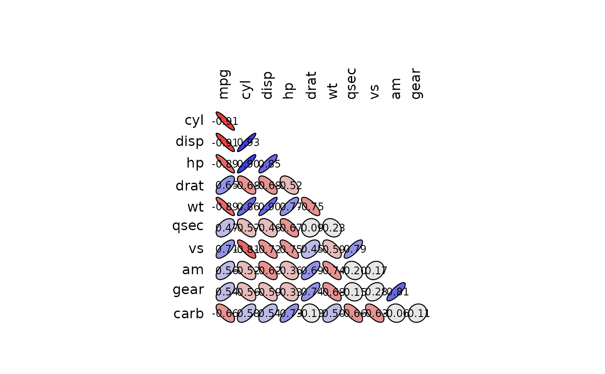

Compute the correlation matrix between all columns of a matrix or data frame.
correlation(x, ...) Correlation(x, ...) # S3 method for formula correlation(formula, data = NULL, subset, na.action, ...) # S3 method for default correlation( x, y = NULL, use = "everything", method = c("pearson", "kendall", "spearman"), ... ) is.Correlation(x) is.correlation(x) as.Correlation(x) as.correlation(x) # S3 method for Correlation print(x, digits = 3, cutoff = 0, ...) # S3 method for Correlation summary( object, cutpoints = c(0.3, 0.6, 0.8, 0.9, 0.95), symbols = c(" ", ".", ",", "+", "*", "B"), ... ) # S3 method for summary.Correlation print(x, ...) # S3 method for Correlation plot( x, y = NULL, outline = TRUE, cutpoints = c(0.3, 0.6, 0.8, 0.9, 0.95), palette = rwb.colors, col = NULL, numbers = TRUE, digits = 2, type = c("full", "lower", "upper"), diag = (type == "full"), cex.lab = par("cex.lab"), cex = 0.75 * par("cex"), ... ) # S3 method for Correlation lines( x, choices = 1L:2L, col = par("col"), lty = 2, ar.length = 0.1, pos = NULL, cex = par("cex"), labels = rownames(x), ... )
Arguments
| x | A numeric vector, matrix or data frame (or any object for
|
|---|---|
| ... | Further arguments passed to functions. |
| formula | A formula with no response variable, referring only to numeric variables. |
| data | An optional data frame (or similar, see |
| subset | An optional vector used to select rows (observations) of the
data matrix |
| na.action | A function which indicates what should happen when the data
contain |
| y |
|
| use | An optional character string giving a method for computing
correlations in the presence of missing values. This must be (an abbreviation
of) one of the strings |
| method | A character string indicating which correlation coefficient is
to be computed. One of |
| digits | Digits to print after the decimal separator. |
| cutoff | Correlation coefficients lower than this (in absolute value) are suppressed. |
| object | A 'Correlation' object. |
| cutpoints | The cut points to use for categories. Specify only positive values (absolute value of correlation coefficients are summarized, or negative equivalents are automatically computed for the graph. Do not include 0 or 1 in the cutpoints). |
| symbols | The symbols to use to summarize the correlation matrix. |
| outline | Do we draw the outline of the ellipse? |
| palette | A function that can produce a palette of colors. |
| col | Color of the ellipse. If |
| numbers | Do we print correlation values in the center of the ellipses? |
| type | Do we plot a complete matrix, or only lower or upper triangle? |
| diag | Do we plot items on the diagonal? They have always a correlation of one. |
| cex.lab | The expansion factor for labels. |
| cex | The expansion factor for text. |
| choices | The items to select. |
| lty | The line type to draw. |
| ar.length | The length of the arrow head. |
| pos | The position relative to arrows. |
| labels | The label to draw near the arrows. |
Value
Correlation() and as.Correlation() create a 'Correlation'
object, while is.Correlation() tests for it.
There are print() and summary() methods for the 'Correlation' object
that differ in the symbolic encoding of the correlations,
(using symnum() for summary()), which makes large correlation matrices
more readable.
The plot() method draws ellipses on a graph to represent the correlation
matrix visually. This is essentially the plotcorr() function from package
ellipse, with slightly different default arguments and with default
cutpoints equivalent to those used in the summary() method.
See also
cov(), cov2cor(), cov.wt(), symnum(), plotcorr() and look
also at panel_cor()
Examples
#> [1] -0.4933597#> Matrix of Pearson's product-moment correlation: #> (calculation uses everything) #> x y #> x 1.000 -0.305 #> y -0.305 1.000# 'Correlation' objects allow better inspection of the correlation matrices # than the output of default R cor() function (longley.cor <- Correlation(longley))#> Matrix of Pearson's product-moment correlation: #> (calculation uses everything) #> GNP.deflator GNP Unemployed Armed.Forces Population Year #> GNP.deflator 1.000 0.992 0.621 0.465 0.979 0.991 #> GNP 0.992 1.000 0.604 0.446 0.991 0.995 #> Unemployed 0.621 0.604 1.000 -0.177 0.687 0.668 #> Armed.Forces 0.465 0.446 -0.177 1.000 0.364 0.417 #> Population 0.979 0.991 0.687 0.364 1.000 0.994 #> Year 0.991 0.995 0.668 0.417 0.994 1.000 #> Employed 0.971 0.984 0.502 0.457 0.960 0.971 #> Employed #> GNP.deflator 0.971 #> GNP 0.984 #> Unemployed 0.502 #> Armed.Forces 0.457 #> Population 0.960 #> Year 0.971 #> Employed 1.000#> Matrix of Pearson's product-moment correlation: #> (calculation uses everything) #> GNP. GNP U A P Y E #> GNP.deflator 1 #> GNP B 1 #> Unemployed , , 1 #> Armed.Forces . . 1 #> Population B B , . 1 #> Year B B , . B 1 #> Employed B B . . B B 1 #> attr(,"legend") #> [1] 0 ‘ ’ 0.3 ‘.’ 0.6 ‘,’ 0.8 ‘+’ 0.9 ‘*’ 0.95 ‘B’ 1# Use of the formula interface (mtcars.cor <- Correlation(~ mpg + cyl + disp + hp, data = mtcars, method = "spearman", na.action = "na.omit"))#> Matrix of Spearman's rank correlation rho: #> (missing values are managed with na.omit) #> mpg cyl disp hp #> mpg 1.000 -0.911 -0.909 -0.895 #> cyl -0.911 1.000 0.928 0.902 #> disp -0.909 0.928 1.000 0.851 #> hp -0.895 0.902 0.851 1.000#> Matrix of Spearman's rank correlation rho: #> (calculation uses everything) #> mpg cyl disp hp drat wt qsec vs am gear #> mpg 1.000 -0.911 -0.909 -0.895 0.651 -0.886 0.707 #> cyl -0.911 1.000 0.928 0.902 -0.679 0.858 -0.814 #> disp -0.909 0.928 1.000 0.851 -0.684 0.898 -0.724 -0.624 #> hp -0.895 0.902 0.851 1.000 0.775 -0.667 -0.752 #> drat 0.651 -0.679 -0.684 1.000 -0.750 0.687 0.745 #> wt -0.886 0.858 0.898 0.775 -0.750 1.000 -0.738 -0.676 #> qsec -0.667 1.000 0.792 #> vs 0.707 -0.814 -0.724 -0.752 0.792 1.000 #> am -0.624 0.687 -0.738 1.000 0.808 #> gear 0.745 -0.676 0.808 1.000 #> carb -0.657 0.733 -0.659 -0.634 #> carb #> mpg -0.657 #> cyl #> disp #> hp 0.733 #> drat #> wt #> qsec -0.659 #> vs -0.634 #> am #> gear #> carb 1.000summary(mtcars.cor2)#> Matrix of Spearman's rank correlation rho: #> (calculation uses everything) #> m cy ds h dr w q v a g cr #> mpg 1 #> cyl * 1 #> disp * * 1 #> hp + * + 1 #> drat , , , . 1 #> wt + + + , , 1 #> qsec . . . , 1 #> vs , + , , . . , 1 #> am . . , . , , 1 #> gear . . . . , , + 1 #> carb , . . , . , , 1 #> attr(,"legend") #> [1] 0 ‘ ’ 0.3 ‘.’ 0.6 ‘,’ 0.8 ‘+’ 0.9 ‘*’ 0.95 ‘B’ 1mtcars.cor2["mpg", "cyl"] # Extract a correlation from the correlation matrix#> [1] -0.9108013